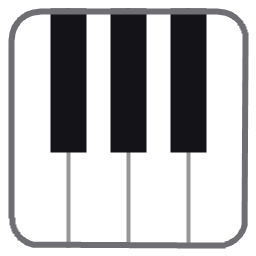
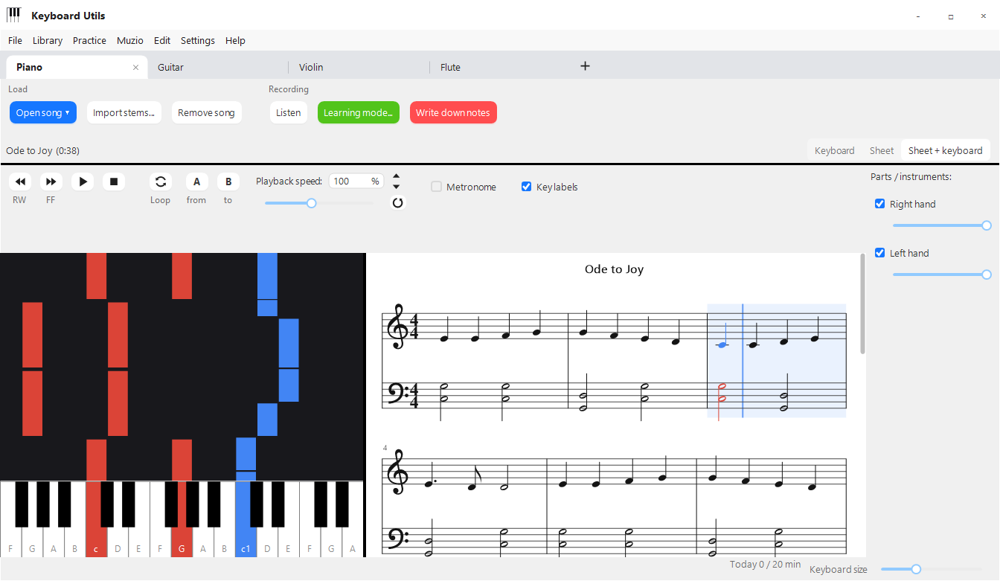

Keyboard and sheet music
Falling notes, sheet music on the grand staff with the key signature, or both side by side. Click a bar to jump there.

Keyboard UtilsWindows app · free
Keyboard Utils plays a song as falling notes and as sheet music – for piano, guitar, violin, viola, cello,
flutes, clarinet, trumpet and saxophone.
In learning mode it listens to what you play and shows where you hit the note and where you didn't.
It works with MIDI keys, with a microphone for an acoustic instrument, or with just a mouse.
KeyboardUtils.exe, 7 MB · Windows 10 and 11 · needs the .NET 10 Desktop Runtime

Falling notes, sheet music on the grand staff with the key signature, or both side by side. Click a bar to jump there.
The song waits until you play the right note, or keeps going in tempo. A score at the end, last time's result and a progress chart for every song.
Repeat a hard passage, slow down to 25 %, turn on the metronome with a count-in – or just the metronome without a song, with a time signature and a tapped tempo.
Play a melody and the app writes it down. Listen back and save it as MIDI or MusicXML for MuseScore.
MIDI and MusicXML from a file or a folder, over 2000 free pieces from the Mutopia Project, stems from FL Studio and audio turned into notes.
Guitar and strings on a fingerboard; flutes, clarinet, saxophone and trumpet with fingering charts the song falls into. Tablature, chords, a tuner and each instrument's real sound.
The history of every attempt, hard spots and a daily goal. A practice report for a week or a month as a PDF – email it to the teacher or print it.
Keyboard shortcuts and control of the whole app from a second (macro) keyboard, knob included – your hands stay at the instrument.
The Download for Windows button gets you KeyboardUtils.exe;
just run it. Windows may say it "protected your PC": click
More info and Run anyway.
Why?
Your own MIDI or MusicXML, or search for free sheet music right in the app.
Pick your instrument at the top, plug in MIDI keys or let the app listen through a microphone, and start learning mode.
Muzio (Keyboard Hero) is the web app for the students of ZUŠ Moravský Krumlov: you record your practice right in the browser, collect stars, keep up a practice streak, and your teacher listens to your recordings and grades them. Keyboard Utils is its partner for practising at the computer.
Open Muzio